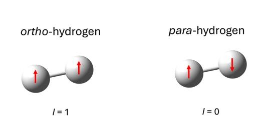
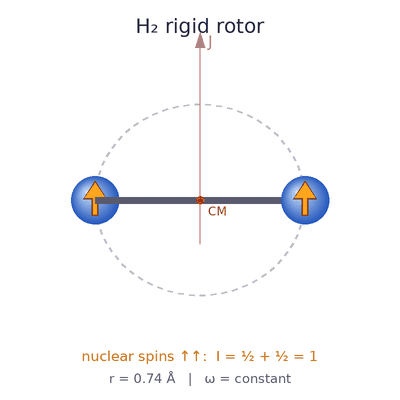
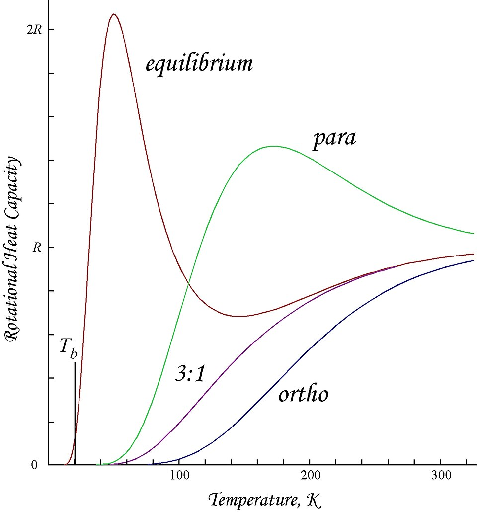
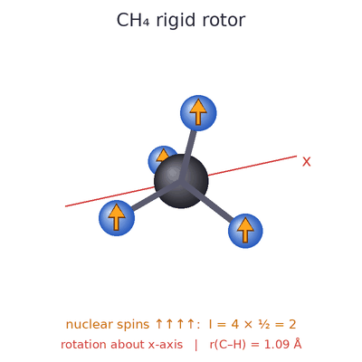
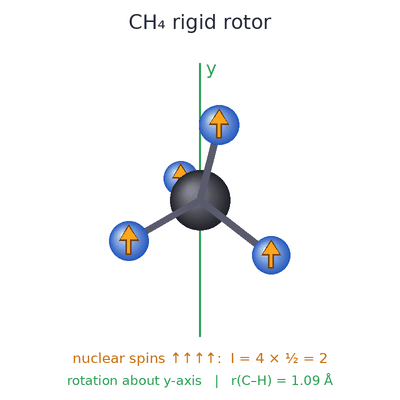
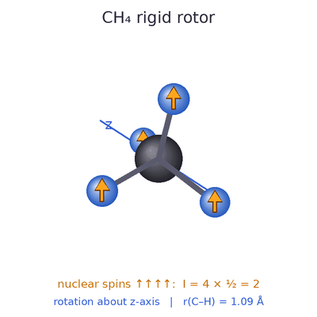
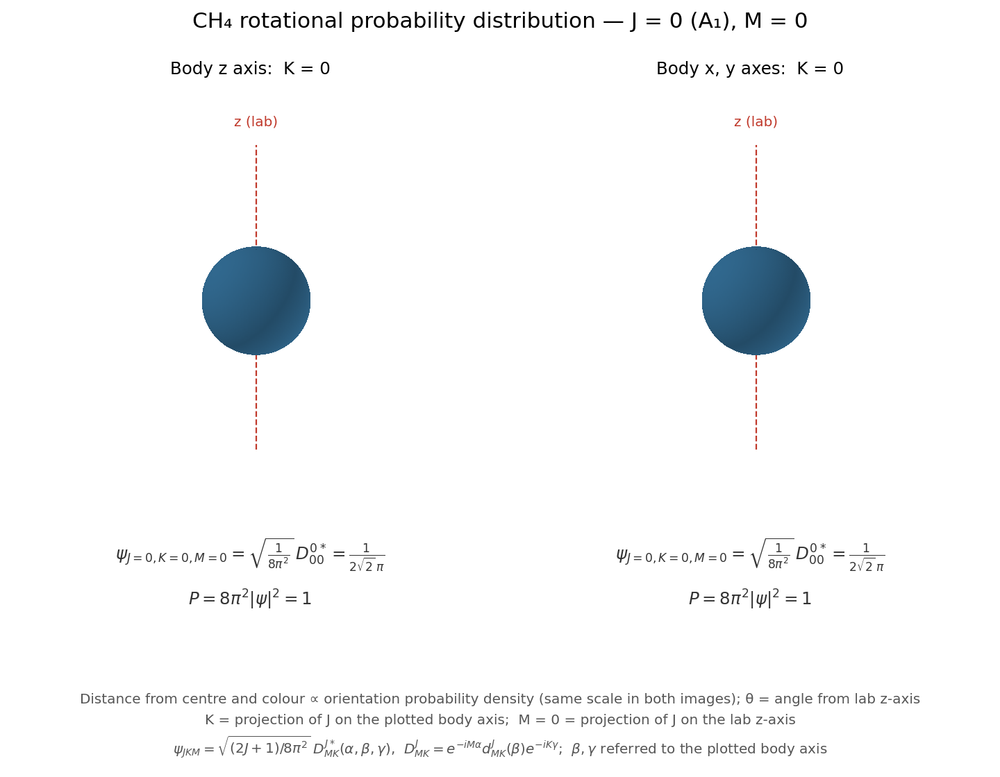
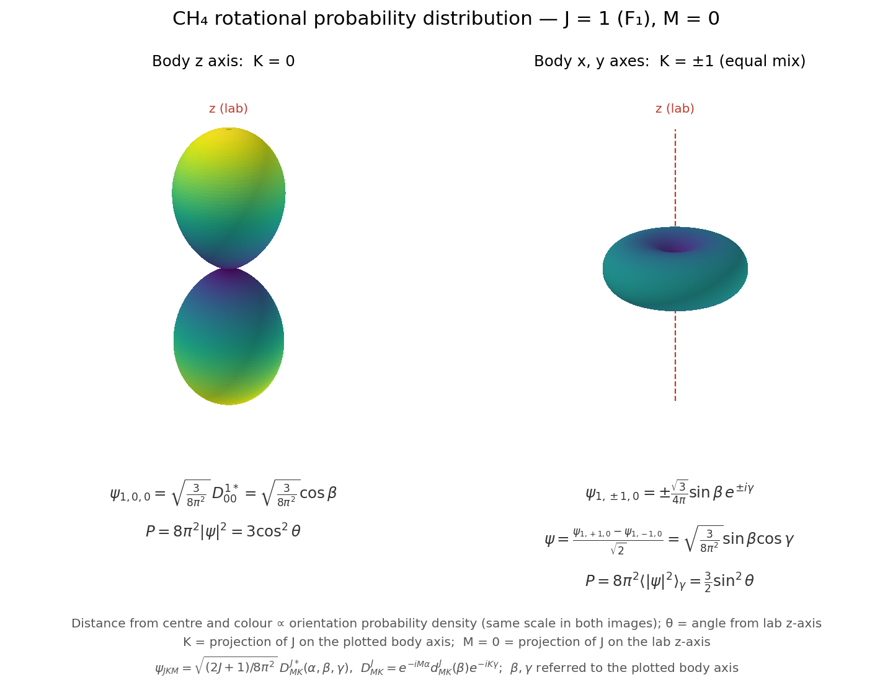

My name is Nathan McLane and I am a 5th year Chemical Physics P.h.D candidate in Dr. Leah Dodson's group.
My main thesis work is enriching specific quantum states of molecular hydrogen, methane and water using cryogenic porous materials or iceous species. Particularly, I want to enrich certain nuclear-spin isomers (NSI) of these molecules.
My biggest interest lies in symmetry and their underlying consequences, particularly the use of irreducible representations, being applied to molecules.
Below are a list of useful notes I have compiled and used through this website.
Lecture notes by Dr. Alexander Sokolov.Click here to see my PowerPoint presentations I have given to other students. This is at a personal interest level, I am by no means an expert on these subjects.
I have also made some Kahoots to help with understanding for specific presentations.
Click here for the Hartree-Fock Kahoot.Nuclear-spin isomers (NSI) are the coupled nuclear spin states allowed by the presence of identical, permutable nuclei. They are labeled by the total nuclear spin I. The simplest example is molecular hydrogen, H2, which contains two protons, each a fermion with spin ½. Two coupled states can be formed: a total nuclear spin of 1, called ortho-H2, and a total nuclear spin of 0, called para-H2. Each level has a degeneracy of $2I+1$, one state for each projection $M_I$ of the spin angular momentum on the laboratory axis. Ortho-H2 therefore has three states ($M_I = +1, 0, -1$) and para-H2 has one ($M_I = 0$).

Because the nuclei are identical fermions, the wavefunction must change sign when two of them are interchanged:
$$\hat{P}_{ij}\,\Psi(\ldots,i,\ldots,j,\ldots) = -\,\Psi(\ldots,i,\ldots,j,\ldots)$$For a molecule, this means the total wavefunction must be antisymmetric under exchange of identical nuclei. Within the Born–Oppenheimer approximation it can be written as a product over all degrees of freedom:
$$\Psi = \phi_{\mathrm{trans}}\;\phi_{\mathrm{vib}}\;\phi_{\mathrm{el\ orb}}\;\phi_{\mathrm{el\ spin}}\;\phi_{\mathrm{rot}}\;\phi_{\mathrm{nuc\ spin}}$$For the molecules considered here in their ground state, the translational, vibrational, electronic orbital and electronic spin parts are symmetric under exchange, which leaves only two factors that can contribute a sign:
$$\Psi \approx \phi_{\mathrm{rot}}\;\phi_{\mathrm{nuc\ spin}}$$The nuclear spin and rotational parts must therefore pair up so that their combined symmetry is antisymmetric. First, the spin part: the nuclear spin function of ortho-H2 ($I=1$) is symmetric under exchange and that of para-H2 ($I=0$) is antisymmetric:
$$\hat{P}_{12}\,|1,M_I\rangle = +\,|1,M_I\rangle, \qquad \hat{P}_{12}\,|0,0\rangle = -\,|0,0\rangle$$Next, the rotational part: exchanging the two nuclei of H2 inverts the internuclear axis, which sends $(\theta,\phi) \rightarrow (\pi-\theta,\ \phi+\pi)$. The rotational wavefunction then changes by a factor of $(-1)^J$:
$$\hat{P}_{12}\,Y_J^M(\theta,\phi) \;=\; Y_J^M(\pi-\theta,\ \phi+\pi) \;=\; (-1)^J\, Y_J^M(\theta,\phi)$$Explicit examples:
$$\begin{aligned} Y_0^0 &= \sqrt{\tfrac{1}{4\pi}} &&\rightarrow\; +Y_0^0 \quad (J=0,\ \text{symmetric})\\[4pt] Y_1^0 &= \sqrt{\tfrac{3}{4\pi}}\cos\theta &&\rightarrow\; -Y_1^0 \quad (J=1,\ \text{antisymmetric})\\[4pt] Y_2^0 &= \sqrt{\tfrac{5}{16\pi}}\left(3\cos^2\theta-1\right) &&\rightarrow\; +Y_2^0 \quad (J=2,\ \text{symmetric}) \end{aligned}$$Requiring the product of the rotational and spin symmetries to be $-1$ fixes which values of $J$ go with each isomer:
$$\hat{P}_{12}\,\Psi = -\Psi \quad\Longrightarrow\quad \begin{cases} \text{ortho: } I=1\ (\text{symmetric spin}),\ J\ \text{odd}\\[4pt] \text{para: } I=0\ (\text{antisymmetric spin}),\ J\ \text{even} \end{cases}$$This assumes the ground electronic state of H2 (Σg+) and a symmetric vibrational function, so only the rotational and spin parts contribute a sign.

Tnterestingly, the NSI in the gas-phase do not have coupling between the two states. This is because conversion between the two nuclear spin isomers requires an operator that is odd under exchange, such as I1 − I2, which turns a symmetric (triplet) spin state into an antisymmetric (singlet) one. The molecule's Hamiltonian cannot contain such a term on its own, because the two protons are identical and the Hamiltonian must be even under exchange. Nor can it be paired with a rotational or spatial operator to make an allowed term. Pairing it with J gives (I1 − I2)·J, which is still odd under exchange. Pairing it with the bond direction n gives (I1 − I2)·n, which is even under exchange but odd under spatial inversion, and the Hamiltonian must be even under inversion as well. Both are therefore forbidden, and an isolated H2 molecule does not convert between ortho and para.
Once again, a good example of why people are interested in NSI and enriching one state is looking at H2 and the nuclear-spin - rotation correlations. Due to the inability of coupling the two NSI states, two species can be treated as completely different particles with vastly different macroscopic properties. One prime example with applications to storage of H2 fuel, is the vastly different heat capacities of the two states. para-H2 has a substantially higher heat capacity, meaning when storing this at cryogenic temperatures it requires more energy to raise the temperature of the sample, as opposed to ortho-h2- warranting the enrichment of para-h2 for storing fuel. Additonally, depending on how H2 is stored ortho h2 can convert para-h2 releasing heat and causing complications for storage of the sample.




Below is the J=0 and J=1 rotational states of methane


Wigner D matricesAnother way to determine weights of spin-states is through a simple, yet elegant derivation using angular momentum algebra devised by Takeshi Oka (citation). The "almighty formula" for all possible derivations is given by
$$D_{I_1} \otimes D_{I_2} = D_{I_1 + I_2} \oplus D_{I_1 + I_2 - 1} \oplus \cdots \oplus D_{|I_1 - I_2|}$$This equation can be applied to any possible NSI-containing molecular species. As an example, the derivation for $H_2$ can be done by
$$D_{1/2} \otimes D_{1/2} = D_1 \oplus D_0$$In this case the subscript denotes the combined total nuclear spin $I$, so we have two states with $I=1$ and $I=0$, with degeneracies of 3 and 1, respectively, based on $2I+1$. An even more powerful use of this method is deducing the irreducible representations of a spin state. To show this, using $CH_4$ as an example gives
$$D_{1/2} \otimes D_{1/2} \otimes D_{1/2} \otimes D_{1/2} = (D_{1/2} \otimes D_{1/2}) \otimes (D_{1/2} \otimes D_{1/2}) = (D_1 \oplus D_0) \otimes (D_1 \oplus D_0)$$ $$(D_1 \oplus D_0) \otimes (D_1 \oplus D_0) = (D_1 \otimes D_1) \oplus 2(D_1 \otimes D_0) \oplus (D_0 \otimes D_0)$$ $$(D_1 \otimes D_1) \oplus 2(D_1 \otimes D_0) \oplus (D_0 \otimes D_0) = D_2 \oplus D_1 \oplus D_0 \oplus 2D_1 \oplus D_0 = D_2 \oplus 3D_1 \oplus 2D_0$$where, through inspection, we have states $I = 2, 1, 0$ with irreducible representations $A, T, E$, derived from their respective preceding coefficients.